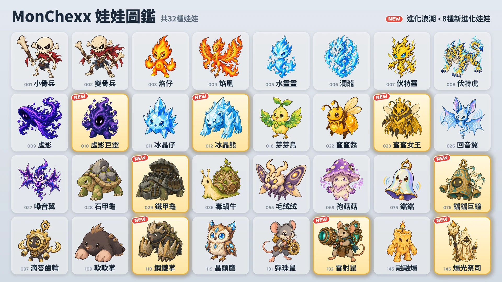

10月17日將新增8種進化娃娃。

8種新進化娃娃
- 虛影巨靈：由虛影進化 · 坦克 / 戰士
- 冰晶熊：由冰晶仔進化 · 坦克 / 戰士
- 蜜蜜女王：由蜜蜜醬進化 · 輔助 / 遠程
- 鐵甲龜：由石甲龜進化 · 坦克
- 鐺鐺巨鐘：由鐺鐺進化 · 坦克
- 鋼鐵掌：由軟軟掌進化 · 坦克 / 刺客
- 雷射鼠：由彈珠鼠進化 · 遠程
- 燭光祭司：由融融燭進化 · 輔助 / 遠程
取得方式
- 夾娃娃機（活動）：活動期間（10月17日至24日），除了一排兩端的兩台以外，所有機台都會放入1種新進化娃娃和另外2種娃娃。活動結束後，新進化娃娃也會以與其他娃娃相同的比例放入。
- 娃娃兌換處：用10個備用娃娃可換得自選的娃娃（自選兌換），用3個可換得隨機娃娃（隨機兌換）。
- 娃娃包：也能開出新進化娃娃。
使用進化娃娃
新娃娃
以「攻擊力」「魔力」「最大生命值」的百分比表示的數值，會隨娃娃等級提升而變大。
 虛影巨靈 · 坦克/戰士 · 射程1格
虛影巨靈 · 坦克/戰士 · 射程1格
- 虛空吸收：自身最大生命值增加，增加量為魔力的200%加上戰鬥開始時最大生命值的3%，並恢復與增加量相同的生命值。接著對自身周圍1格內的所有敵人造成相當於自身最大生命值10%的魔法傷害。最大生命值達到戰鬥開始時的3倍時，該範圍擴大1格；此後每再增加相當於戰鬥開始時的最大生命值，就再擴大同樣多。增加的最大生命值會持續到戰鬥結束。
- 虛空吞噬：4格內的敵人每次使用主動技能時，自身獲得10點法力。
 冰晶熊 · 坦克/戰士 · 射程1格
冰晶熊 · 坦克/戰士 · 射程1格
- 冰霜重擊：對當前目標造成相當於攻擊力240%的物理傷害，並使其陷入冰凍1.5秒。陷入冰凍的敵人無法行動，也無法獲得法力。對目標身後2格內扇形範圍中的敵人造成相當於攻擊力180%的物理傷害，並施加冰霜，使其攻擊速度降低15%，持續6秒。
- 水晶皮膚：受到的魔法傷害降低20%。魔法持續傷害也適用，並於魔法抗性生效後計算。
 蜜蜜女王 · 輔助/遠程 · 射程3格
蜜蜜女王 · 輔助/遠程 · 射程3格
- 蜂王乳：治療自身的所有工蜂，恢復相當於其最大生命值10%的生命值，並使其攻擊速度提高200%，持續3秒。接著，若工蜂數量少於上限，則在周圍的空格召喚1隻工蜂。
- 工蜂軍團：最多率領3隻工蜂。工蜂的屬性隨蜜蜜女王的等級提高，且不會成為有人數上限的隊友效果的目標。工蜂每秒受到相當於其最大生命值4%的魔法傷害。蜜蜜女王被擊敗時，工蜂會進入狂暴狀態，造成和受到的傷害都變為2倍。
- 工蜂生命值 60 · 工蜂攻擊力 40 (Lv.1)
 鐵甲龜 · 坦克 · 射程1格
鐵甲龜 · 坦克 · 射程1格
- 迴旋砲擊：從面向的方向開始，以逆時針方向每次轉動一個方向，共開砲6次。每發砲彈對該方向2格內的第一個敵人造成相當於攻擊力500%的物理傷害。砲彈之間的間隔為0.5秒，會隨攻擊速度改變。開砲期間不會移動；若陷入暈眩或冰凍，剩餘的砲彈不會發射。砲擊結束前無法獲得法力。
- 要塞甲殼：自身周圍1格內每有一名敵人，防禦力和魔法抗性各提高35。
 鐺鐺巨鐘 · 坦克 · 射程1格
鐺鐺巨鐘 · 坦克 · 射程1格
- 敲鐘：為自身施加相當於魔力300%的護盾，並對自身2格內的所有敵人施加嘲諷，均持續2秒。被嘲諷的敵人在此期間只會攻擊鐺鐺巨鐘，且無法開始施放技能。同一期間內，每次受到敵人的普通攻擊，都會對自身2格內的所有敵人造成魔法傷害，數值相當於該次攻擊傷害（經防禦力和護盾減少前）的25%。嘲諷結束前無法獲得法力。
- 共鳴：自身2格內的其他隊友每次使用主動技能時，自身恢復相當於魔力50%的生命值。
 鋼鐵掌 · 坦克/刺客 · 射程1格
鋼鐵掌 · 坦克/刺客 · 射程1格
- 地道強襲：鑽入地下並解除自身所有弱化效果，以移動速度的3倍移動到周圍1格內敵人最多的空格，然後對周圍1格內的所有敵人造成相當於攻擊力500%的物理傷害。在地下移動期間不會受到攻擊。
- 岩石利爪：防禦力提高相當於攻擊力20%的數值。
- 以0點法力開始戰鬥。
 雷射鼠 · 遠程 · 射程4格
雷射鼠 · 遠程 · 射程4格
- 雷射砲：朝4格內的當前目標方向為雷射砲充能1.5秒，然後發射寬度1格的雷射直達場地邊緣，對範圍內的所有敵人造成相當於攻擊力1000%的魔法傷害。方向在開始充能時決定；充能期間若陷入暈眩或冰凍，發射會取消。
- 預熱迴路：每次進行普通攻擊，攻擊速度提高20%，沒有上限；使用主動技能時重置。
 燭光祭司 · 輔助/遠程 · 射程3格
燭光祭司 · 輔助/遠程 · 射程3格
- 不滅之火：對自身以外當前生命值最低的一名隊友留下標記，持續5秒。同時為帶有標記的隊友施加相當於自身魔力200%的護盾，持續時間與標記相同。帶有標記的隊友即將因直接傷害被擊敗時，由自身代替該隊友承受該傷害的200%，該隊友則不會受到這次傷害。標記同時只會存在一個，且無法防止隊友因持續傷害被擊敗。
- 融化蜂蠟：自身受到的直接傷害在護盾抵擋後，剩餘的部分會在4秒內分次從生命值中扣除。持續傷害則會立即承受。
排位賽 · 徽章
所有娃娃的平衡調整，請參閱「平衡調整 · 戰鬥系統」更新說明。